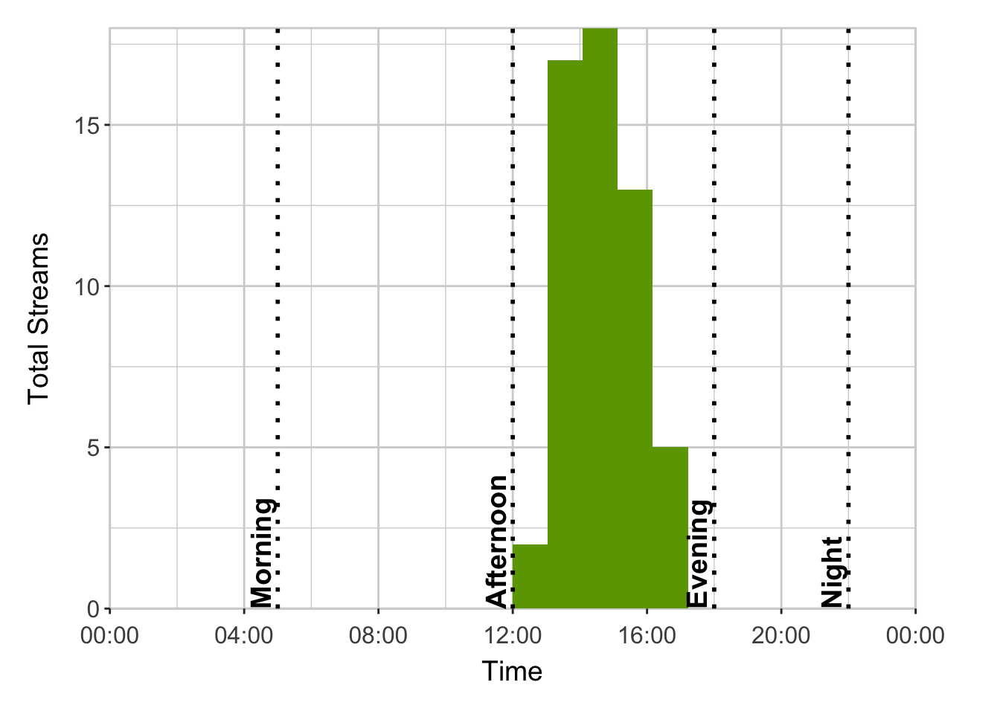

Code
library(DT)
library(hms)
library(here)
library(shiny)
library(ggstar)
library(tidyverse)
library(lubridate)
library(googlesheets4)
library(shinydashboard)library(DT)
library(hms)
library(here)
library(shiny)
library(ggstar)
library(tidyverse)
library(lubridate)
library(googlesheets4)
library(shinydashboard)raw_data <- read_sheet("https://docs.google.com/spreadsheets/d/1U2XrypJcbxnK-hb4GnnqcOejY00HU1kcCVIfWHB_Q7A/edit?usp=sharing")# Source cleaning function
source(here("analysis", "functions", "clean_data.R"))
# Clean Spotify data
spotify_data <- clean_data(raw_data)# Month
i <- 12# Create rank valueBox
rank_df <- data.frame(month = seq_along(spotify_data),
total_streams = sapply(spotify_data, nrow)) %>%
arrange(desc(total_streams)) %>%
mutate(rank = ifelse(row_number() == 1, "1st",
ifelse(row_number() == 2, "2nd",
ifelse(row_number() == 3, "3rd",
paste0(row_number(), "th")))))
valueBox(rank_df$rank[rank_df$month == i],
subtitle = "Rank")Rank
# Create valueBox for total streams
valueBox(spotify_data[[i]] %>%
summarize(total_streams = n()),
subtitle = "Total Streams")Total Streams
# Create valueBox for total number of songs
valueBox(spotify_data[[i]] %>%
distinct(track) %>%
summarize(total_songs = n()),
subtitle = "Songs")Songs
# Create valueBox for total number of artists
valueBox(spotify_data[[i]] %>%
distinct(artist) %>%
summarize(total_artists = n()),
subtitle = "Artists")Artists
# Create DT for top 10 songs
spotify_data[[i]] %>%
group_by(track, artist) %>%
summarize(total_streams = n()) %>%
arrange(desc(total_streams)) %>%
ungroup() %>%
slice_head(n = 10) %>%
datatable(colnames = c("Track", "Artist", "Total Streams"),
class = "hover",
options = list(dom = "t"))# Create DT for top 10 artists
spotify_data[[i]] %>%
group_by(artist) %>%
summarize(total_streams = n()) %>%
arrange(desc(total_streams)) %>%
ungroup() %>%
slice_head(n = 10) %>%
datatable(colnames = c("Artist", "Total Streams"),
class = "hover",
options = list(dom = "t"))# Identify top song from top artist
spotify_data[[i]] %>%
group_by(artist) %>%
summarize(total_streams = n()) %>%
arrange(desc(total_streams)) %>%
slice_head(n = 1) %>%
inner_join(spotify_data[[i]], by = "artist") %>%
group_by(artist, track) %>%
summarize(total_streams = n(), .groups = "drop") %>%
arrange(desc(total_streams)) %>%
slice_head(n = 1) %>%
mutate(message = paste("Top song from", artist, "is", track, "with", total_streams, "streams!")) %>%
pull(message) %>%
print()[1] "Top song from Lorde is Hammer with 12 streams!"# highest streaming day
max <- spotify_data[[i]] %>%
group_by(day) %>%
summarize(total_streams = n()) %>%
slice_max(order_by = total_streams)
# lowest streaming day
min <- spotify_data[[i]] %>%
group_by(day) %>%
summarize(total_streams = n()) %>%
slice_min(order_by = total_streams)
# Plot monthly streaming habits
spotify_data[[i]] %>%
group_by(day) %>%
summarize(total_streams = n()) %>%
ggplot(aes(x = day, y = total_streams)) +
geom_line(color = "#6ca200", linewidth = 2, lineend = "round") +
geom_star(data = max, size = 5, fill = "black") +
geom_point(data = min, shape = 1, size = 5, stroke = 1.5) +
scale_x_continuous(expand = c(0, 0)) +
scale_y_continuous(expand = c(0, 0), limits = c(0, NA)) +
coord_cartesian(clip = "off") +
labs(x = "Day",
y = "Total Streams") +
theme_bw() +
theme(axis.title.x = element_text(size = 14, margin = margin(t = 10)),
axis.title.y = element_text(size = 14, margin = margin(r = 10)),
axis.text = element_text(size = 12),
axis.text.x = element_text(vjust = -0.5),
axis.ticks = element_line(color = "#303030"),
plot.margin = margin(t = 0.5, r = 1.5, b = 0.5, l = 0.5, "cm"),
panel.border = element_blank(),
panel.background = element_rect(color = "lightgrey", fill = NA),
panel.grid = element_line(color = "lightgrey"))
# Identify the highest streaming day
spotify_data[[i]] %>%
group_by(month, day) %>%
summarize(total_streams = n(), .groups = "drop") %>%
filter(total_streams == max(total_streams)) %>%
mutate(message = paste0("Highest Streaming Day(s): ", month, " ", day, "\n",
"Total Streams: ", total_streams)) %>%
pull(message) %>%
cat()Highest Streaming Day(s): December 11
Total Streams: 55# Percent of streams for highest streaming day
spotify_data[[i]] %>%
group_by(month, day) %>%
summarize(total_streams = n(), .groups = "drop") %>%
arrange(desc(total_streams)) %>%
summarize(month = month[1], day = day[1], pct = max(total_streams)/sum(total_streams)*100) %>%
mutate(message = paste0("The highest streaming day accounted for ", signif(pct, digits = 3), "% of streams.")) %>%
pull(message) %>%
print()[1] "The highest streaming day accounted for 8.06% of streams."# Identify the lowest streaming day
spotify_data[[i]] %>%
group_by(month, day) %>%
summarize(total_streams = n(), .groups = "drop") %>%
filter(total_streams == min(total_streams)) %>%
mutate(days_list = paste0(month, " ", day, collapse = ", ")) %>%
slice_head(n = 1) %>%
mutate(message = paste0("Lowest Streaming Day(s): ", days_list, "\n",
"Total Streams: ", total_streams)) %>%
pull(message) %>%
cat()Lowest Streaming Day(s): December 7
Total Streams: 4# Average streams per day
spotify_data[[i]] %>%
group_by(day) %>%
summarize(total_streams = n(), .groups = "drop") %>%
summarize(avg_daily_streams = mean(total_streams)) %>%
mutate(message = paste("Average Daily Streams:", signif(avg_daily_streams, digits = 2))) %>%
pull(message) %>%
print()[1] "Average Daily Streams: 23"# Plot listening activity for highest streaming day
spotify_data[[i]] %>%
group_by(day) %>%
mutate(total_streams = n()) %>%
ungroup() %>%
filter(total_streams == max(total_streams)) %>%
ggplot(aes(x = time)) +
geom_histogram(fill = "#6ca200", bins = 24) +
scale_x_time(expand = c(0, 0), labels = scales::time_format("%H:%M"),
limits = c(as_hms("00:00:00"), as_hms("24:00:00"))) +
scale_y_continuous(expand = c(0, 0)) +
coord_cartesian(clip = "off") +
geom_vline(xintercept = as_hms("05:00:00"), linetype = "dotted", linewidth = 1) +
geom_vline(xintercept = as_hms("12:00:00"), linetype = "dotted", linewidth = 1) +
geom_vline(xintercept = as_hms("18:00:00"), linetype = "dotted", linewidth = 1) +
geom_vline(xintercept = as_hms("22:00:00"), linetype = "dotted", linewidth = 1) +
annotate("text", x = as_hms("04:30:00"), y = 0, hjust = 0, label = "Morning", size = 5, fontface = "bold", angle = 90) +
annotate("text", x = as_hms("11:30:00"), y = 0, hjust = 0, label = "Afternoon", size = 5, fontface = "bold", angle = 90) +
annotate("text", x = as_hms("17:30:00"), y = 0, hjust = 0, label = "Evening", size = 5, fontface = "bold", angle = 90) +
annotate("text", x = as_hms("21:30:00"), y = 0, hjust = 0, label = "Night", size = 5, fontface = "bold", angle = 90) +
labs(x = "Time",
y = "Total Streams") +
theme_bw() +
theme(axis.title.x = element_text(size = 14, margin = margin(t = 10)),
axis.title.y = element_text(size = 14, margin = margin(r = 10)),
axis.text = element_text(size = 12),
axis.text.x = element_text(vjust = -0.5),
axis.ticks = element_line(color = "#303030"),
plot.margin = margin(t = 0.5, r = 1.5, b = 0.5, l = 0.5, "cm"),
panel.border = element_blank(),
panel.background = element_rect(color = "lightgrey", fill = NA),
panel.grid = element_line(color = "lightgrey"))
# Identify activity time of day during peak day
spotify_data[[i]] %>%
group_by(day) %>%
mutate(total_streams = n()) %>%
ungroup() %>%
filter(total_streams == max(total_streams)) %>%
mutate(hour = hour(time),
time_of_day = case_when(hour >= 5 & hour < 12 ~ "morning",
hour >= 12 & hour < 18 ~ "afternoon",
hour >= 18 & hour < 22 ~ "evening",
hour >= 22 | hour < 5 ~ "night")) %>%
group_by(time_of_day) %>%
summarize(total_streams = n()) %>%
arrange(desc(total_streams)) %>%
slice_head(n = 1) %>%
mutate(message = paste0("You mostly listened to music during the ", time_of_day,".")) %>%
pull(message) %>%
print()[1] "You mostly listened to music during the afternoon."